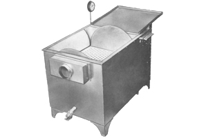

Ashley sure-Scald
Call for Pricing US and Canada 1-800-521-4886
Model ss-30 (Shown)
Other Sizes Available SS-36, SS-48
Ashley Sure-Scald is the most widely used off-the-line scalder on the market. It is designed for compact areas, yet is high in production performance and is readily adaptable to line equipment.
Built for Maximum Scalding Capacity with Minimum Labor
The Ashley Sure-Scald incorporates many features which
eliminate unnecessary, time consuming motions from the
scalding job. Designed for large production in limited
space-no shackles or conveyor needed. Birds are not
confined, but tumble freely, thus insuring a thorough scald.
The Accurate Timing Device and Sensitive Thermostat
eliminate guesswork. Inner Tank is constructed of 10-ga.
and 3/16" steel, hot-dip galvanized. Available in three sizes
View Sure-Scald Technical Sheet PDF
Since 1940 Ashley has been supplying performance equipment to the poultry processing industry worldwide.